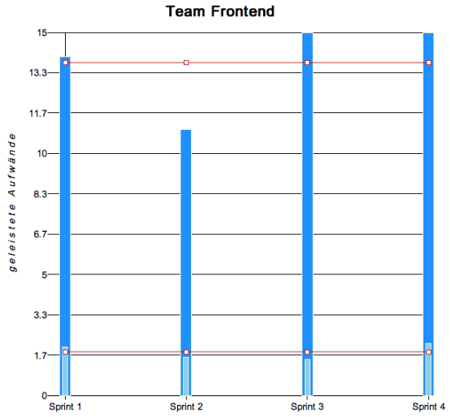
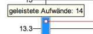
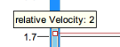
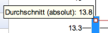
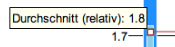

Velocity-Analyse
Der Velocity-Chart dient der Überprüfung der Leistungsfähigkeit eines Teams und ist vornehmlich ein Hilfswerkzeug bei der Planung neuer Sprints.
Es werden die geleisteten Aufwände in Relation zu den jeweiligen Sprints gesetzt, so dass sich die Leistungsfähigkeit grob einschätzen lässt.

Die dunkelblauen Balken stellen die geleisteten Aufwände eines Sprints als Absolutwerte dar. Um eine bessere Planungsgrundlage bereitzustellen werden weiterhin normierte Werte dargestellt: Die hellblauen Balken zeigen die durchschnittlich geleisteten Aufwände pro Tag an.
Für beide Wertreihen werden Durchschnittslinen in rot dargestellt.
Alle Diagrammwerte lassen sich im Detail inspizieren, indem Sie mit der Maus über die Diagrammelemente fahren. Hierbei öffnet sich eine Kurzbeschreibung in Form eines Tooltips:


Created with the Personal Edition of HelpNDoc: Create HTML Help, DOC, PDF and print manuals from 1 single source